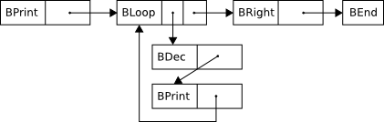

Published on 17 June 2012.
Recently I’ve been writing interpreters for the Brainfuck programming language in Haskell. I’ve also held two workshops where I’ve taught Haskell, and in those workshops, the last exercise is to work on a Brainfuck interpreter.
I’ve experimented with different solutions both to see what they feel like and also to see how they affect performance.
The fifth version became particularly beautiful, and I shall share that beauty with you in this post. This version is inspired by ideas that raek presented to me during and after a workshop.
If you are not familiar with Brainfuck, go read on Wikipedia. I will not explain it here.
I’m going to assume that you are a bit familiar with Haskell. If there is something in particular that you do not understand, feel free to ask in the comments.
The function we are implementing is this:
execute :: String -> IO ()
execute program = interact (run (compile program) emptyDataMap)The Brainfuck program enters our execute function as a string. We compile the program to an internal representation and then run it together with a data tape, emptyDataMap, that holds the data for the Brainfuck program.
interact passes stdin to our run function and prints the output of it on stdout.
We represent the Brainfuck data tape with a typeclass. That allows us to experiment with different data structures without changing the interpreter. The typeclass looks like this:
class Data d where
emptyData :: d
dataGet :: d -> Int
dataModifyValue :: (Int -> Int) -> d -> d
dataModifyPos :: (Int -> Int) -> d -> dFirst of all we need a way to create a data tape. Next we need a way to extract the integer at the current position. And finally we need to be able to change the value at the current position and also change the position itself.
A concrete implementation of this typeclass is presented below:
data DataMap = DataMap
{ currentPos :: Int
, values :: M.Map Int Int
}
emptyDataMap :: DataMap
emptyDataMap = DataMap 0 M.empty
instance Data DataMap where
emptyData = emptyDataMap
dataGet dat = M.findWithDefault 0 (currentPos dat) (values dat)
dataModifyValue fn dat = dat { values = newValues }
where
oldValue = dataGet dat
newValues = M.insert (currentPos dat) (fn oldValue) (values dat)
dataModifyPos fn dat = dat { currentPos = fn (currentPos dat) }The most interesting thing to note is that we use a map instead of a list structure. This makes it easy to create an infinite tape. If we ask for a value at a position that does not yet exist, we just return the default value 0.
To make it easier to work with the data tape, we have these general helper functions that only depend on the interface of the typeclass:
dataMoveRight :: Data d => d -> d
dataMoveRight = dataModifyPos inc
dataMoveLeft :: Data d => d -> d
dataMoveLeft = dataModifyPos dec
dataGetAscii :: Data d => d -> Char
dataGetAscii dat = C.chr $ dataGet dat
dataWriteAscii :: Data d => Char -> d -> d
dataWriteAscii i = dataModifyValue (const $ C.ord i)
dataIncValue :: Data d => d -> d
dataIncValue = dataModifyValue inc
dataDecValue :: Data d => d -> d
dataDecValue = dataModifyValue dec
inc :: Int -> Int
inc = (+1)
dec :: Int -> Int
dec x = x - 1With the data tape out of the way, let’s look at how a Brainfuck program is represented in Haskell. The source code is transformed in two steps: first the program is converted to a list of tokens, and then those tokens are converted to a sort of byte code that the run function interprets.
Making this separation has the benefit that each function that does a transformation can focus on doing only one transformation. The parsing function only needs to deal with the problem of getting the structure of a Brainfuck program represented in Haskell, and does not have to know anything about how this later gets executed.
The data structure for tokens looks like this:
data Token
= TInc
| TDec
| TLeft
| TRight
| TPrint
| TRead
| TLoop [Token]
deriving (Show, Eq)This is a tree-like structure where all tokens are leaves except for loops which in turn have a list of tokens inside of them.
The function that converts a Brainfuck program to a list of tokens uses the Parsec library and looks like this:
parseTokens :: String -> [Token]
parseTokens input =
case parse bfTokens fileName (removeComments input) of
Left err -> error (show err)
Right x -> x
where
fileName :: String
fileName = ""
removeComments :: String -> String
removeComments = filter (`elem` "+-<>.,[]")
bfTokens :: Parser [Token]
bfTokens = many bfToken
bfToken :: Parser Token
bfToken = fmap (const TInc) (char '+')
<|> fmap (const TDec) (char '-')
<|> fmap (const TLeft) (char '<')
<|> fmap (const TRight) (char '>')
<|> fmap (const TPrint) (char '.')
<|> fmap (const TRead) (char ',')
<|> fmap TLoop (between (char '[') (char ']')
bfTokens)bfTokens is our parser. It parses a list of bfToken. bfToken defines a few cases saying that a token is either a plus, or a minus, and so on. The last case says: match a left bracket, then a list of tokens, then a right bracket, and put those tokens inside a TLoop.
Our parser is run on the line with the case-expression. Parsing something with Parsec can either fail or succeed. If parsing fails, we call error and make the interpreter crash. If parsing succeeds, we return the result (which is a list of tokens).
Before we pass the input string to the parser, we remove all comments by keeping only the characters from the input string that mean something in Brainfuck.
The byte code that run interprets looks like this:
data ByteCode
= BInc ByteCode
| BDec ByteCode
| BLeft ByteCode
| BRight ByteCode
| BPrint ByteCode
| BRead ByteCode
| BLoop ByteCode ByteCode
| BEND
deriving (Show, Eq)This is a recursive data type. Every byte code instruction except BEND contains the byte code instruction following it. The loop instruction has two byte codes to continue with: either we enter the loop or we continue after it.
The function that converts tokens to byte code looks like this:
toByteCode :: [Token] -> ByteCode
toByteCode tokens = toByteCode' tokens BEND
where
toByteCode' :: [Token] -> ByteCode -> ByteCode
toByteCode' [] end = end
toByteCode' (TInc :xs) end = BInc (toByteCode' xs end)
toByteCode' (TDec :xs) end = BDec (toByteCode' xs end)
toByteCode' (TLeft :xs) end = BLeft (toByteCode' xs end)
toByteCode' (TRight :xs) end = BRight (toByteCode' xs end)
toByteCode' (TPrint :xs) end = BPrint (toByteCode' xs end)
toByteCode' (TRead :xs) end = BRead (toByteCode' xs end)
toByteCode' (TLoop ls:xs) end = let inner = toByteCode' ls loop
rest = toByteCode' xs end
loop = BLoop inner rest
in loopThere is one special trick going on here, and that is in the last case where we create the loop instruction. toByteCode' takes as last argument the instruction that should be at the end. At the top level, we pass in BEND, but when creating the loop, we pass in the loop itself. So the last instruction of the loop links to the loop itself.
Below is a picture of the byte code representation of this Brainfuck program “.[-.]>” :

Compiling the whole program is just a matter of combining the parsing with the byte code convertion:
compile :: String -> ByteCode
compile = toByteCode . parseTokensThe run function looks like this:
run :: Data d => ByteCode -> d -> String -> String
run BEND dat input = "done!\n"
run (BInc next) dat input = run next (dataIncValue dat) input
run (BDec next) dat input = run next (dataDecValue dat) input
run (BLeft next) dat input = run next (dataMoveLeft dat) input
run (BRight next) dat input = run next (dataMoveRight dat) input
run (BPrint next) dat input = (dataGetAscii dat) : run next dat input
run (BRead next) dat (i:is) = run next (dataWriteAscii i dat) is
run (BLoop loop next) dat input
| dataGet dat == 0 = run next dat input
| otherwise = run loop dat inputIt takes as input a byte code, the Brainfuck data tape, and the user input. The return value is a string which is the output of the program.
The formatting reveals that there are only two byte codes which modify the output, and that is BEND and BPrint. In the same way, we can see that BRead is the only byte code that consumes input. All other byte codes just pass the input along to the next instruction. About half of the byte codes do something with the data tape. In those cases, a modified data tape is passed to the recursive call to run.
When running a loop instruction, we examine the current value on data tape and decide which branch of instructions to continue with.
I find this implementation beautiful because every piece of the program does one specific thing and the pieces are combined to form a whole. The program is also compact. But it’s not compact because text has been crammed together. It’s compact because combining different pieces in Haskell does not require much syntactic noise.
Because I’ve never felt this kind of beauty in my object oriented code, I suspect that it is the way functional languages allow you to combine pieces that make them more beautiful to me.
If you want to look closer at the source code or look at other implementations, it is up on github.
What is Rickard working on and thinking about right now?
Every month I write a newsletter about just that. You will get updates about my current projects and thoughts about programming, and also get a chance to hit reply and interact with me. Subscribe to it below.